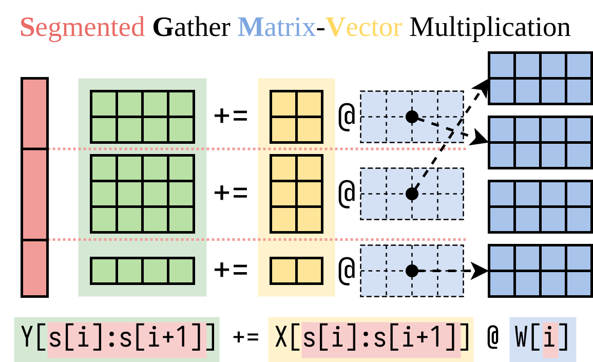

Office Hours 8: Predibase
notes
llms
This Q&A session with Predibase compares and contrasts Lorax, an open-source adapter-tuning library for large language models, with other similar libraries, highlighting its performance optimizations, unique features like dynamic adapter loading and support for various adapter types, and its role in a broader machine learning infrastructure strategy.
This post is part of the following series:
- Mastering LLMs Course Notes: My notes from the course Mastering LLMs: A Conference For Developers & Data Scientists by Hamel Husain and Dan Becker.
Lorax Benefits over vLLM and Other Libraries
- lorax: Multi-LoRA inference server that scales to 1000s of fine-tuned LLMs
Performance Optimization
Lorax uses SGMV (segmented gathered matrix vector multiplication) kernel for pre-fill (compute-bound) operations, while vLLM uses BGMV kernel.
SGMV is optimized for pre-fill computation profiles.

Punica: Multi-Tenant LoRA Serving - Figure 3
Lorax uses both kernels (SGMV for pre-fill, BGMV for decode) depending on the generation process stage, while vLLM uses only BGMV.
Dynamic Adapter Loading
- Lorax is currently the only library offering dynamic adapter loading, eliminating the need to pre-specify adapters and simplifying memory management.
Scheduler Component
- Lorax’s scheduler intelligently manages:
- Adapter residency on GPU and host memory.
- Batching of requests.
- Trade-off between latency and throughput for optimal processing.
Support for Various Adapters
Additional Features
- Adding support for:
- Embedding models.
- Training adapters specifically for embedding models.
Data Requirements and Sourcing for Quality Fine-Tuning
Data Volume vs. Quality
- High-quality data is more important than high volume.
- Large datasets often contain irrelevant information, hindering effective learning.
- Start with a smaller dataset (hundreds of examples) and a larger base model (e.g., Llama 3 70B).
- Larger models perform better with smaller datasets but are more expensive to train and use for inference.
- As the dataset grows, transition to smaller models for cost efficiency.
Synthetic Data Generation
- Significantly increases performance, especially for smaller datasets (hundreds to low thousands of examples).
- Gains decrease with larger datasets (hundreds of thousands).
Case Study: Meta’s “Less is More for Alignment”
- Demonstrated strong performance using only 2,000 samples for training Llama 2 70B (older generation).
Dataset Creation Challenges
- Users often expect to directly transfer knowledge from closed-source APIs (e.g., OpenAI) to open-source models, leading to ineffective QA pairs.
- Solution: Reformulate tasks as RAG problems or use embedding/generator models with appropriate data corpus indexing and training.
Dataset Preparation Support
- Predibase provides guidance on dataset creation but does not offer specific data preparation tools.
- Consulting companies can assist with data preparation and synthetic data generation.
- Collaboration with companies like Gretel for synthetic data as a service is being explored.
Dataset Complexity
- Simpler for traditional supervised ML tasks (e.g., classification, NER, summarization) due to straightforward input-output relationships.
Platform Choice: Predibase vs. Self-Hosting Lorax
Considerations for Self-Hosting
- Suitable for companies where ML infrastructure is a core competency or differentiator.
- Requires a dedicated team for platform development, maintenance, and updates.
Cost-Benefit Analysis
- Self-hosting: High upfront and ongoing costs.
- Predibase: Predictable subscription fee, freeing up resources for other priorities.
Recommendation
- Predibase is generally more cost-effective for companies whose core competencies lie elsewhere, allowing them to focus on product development or model creation.
Lorax Adoption and Engagement Expectations
Comparison to Previous Open-Source Projects
Lorax Adoption Pattern
- Similar to Horovod, attracting technical users building internal ML infrastructure.
- Active contributions from self-hosting users, indicating strong engagement and “dogfooding.”
Future Plans for the Fine-Tuning Index
- Homepage: The Fine-tuning Index
Current State
- Static artifact averaging performance over 31 diverse tasks.
Short-Term Goals
- Transition to a living artifact with regular updates as new models are released.
- Implement tooling for easier model addition and UI integration with a database.
Long-Term Vision
- Achieve the freshness and openness of platforms like LMSYS Leaderboard and Hugging Face Leaderboards.
Additional Improvements
- Introduce Elo scores for more accurate model ranking.
Handling Large-Scale Text Classification with Sensitive Data
Scenario
- 1-2 million free-form text snippets per month requiring 5-10 binary (yes/no) questions.
- GPT-4 performance is desired but cost-prohibitive.
- Data is sensitive and based in the EU.
Solution
- GPT-4 Distillation:
- Use GPT-4 to generate label data for a smaller, more cost-effective model.
- Consider OpenAI’s terms of service when using GPT-4 for data generation.
- Adapter Structure:
- Multiple Adapters: Suitable if the specific adapter to use for each request is unknown beforehand.
- One Adapter with Multiple Label Outputs: Preferable if the adapter selection can be determined based on request information.
- Routing Architectures: Explore if dynamically determining the appropriate adapter is necessary.
- GDPR Compliance:
- Predibase is working with EU-based, GDPR-compliant cloud providers.
- Contact Predibase for options and discussions on EU data center deployments.
On-Device Lorax and Lookahead LoRAs
On-Device Potential
- Highly appealing for running smaller language models on edge devices (e.g., phones) with task-specific LoRAs.
- Aligned with the trend of sparse activation for efficient model execution.
Challenges
- Hardware Compatibility: Lorax is currently optimized for NVIDIA GPUs, which are not common on edge devices.
- Optimizations like flash attention, page attention, and SG&B kernels are CUDA-based.
- Porting to different hardware architectures (e.g., Qualcomm’s AI chips) would require significant code rewriting.
- Optimization techniques might not translate well to specialized ASICs used in edge devices.
Lookahead LoRAs and Speculative Decoding
- Lookahead LoRAs: Fine-tuned for both performance and inference speed (low-rank acceleration).
- Speculative Decoding: Works best for narrow tasks (e.g., summarization, structured generation) where predictions can be made based on limited context.
- Effectiveness increases with narrower task definitions.
- Aligns with the trend of using LLMs for specialized tasks with task-specific LoRAs.
- Hardware Trends: NVIDIA’s newer GPUs (e.g., L40S) prioritize increased FLOPs over memory bandwidth, favoring compute-intensive techniques like speculative decoding.
Speculative Decoding in Practice
- Performance: Expected to work well in practice due to its suitability for narrow tasks.
- High QPS: Ensuring efficient operation at high query per second (QPS) is a current challenge being addressed.
- Fine-Tuning: Speculative decoding components should be fine-tuned alongside the LoRA for seamless integration.
Synthetic Data Generation for Fine-Tuning
Process
- Use a large language model (e.g., Llama 3 70B) with a small dataset for initial fine-tuning.
- Generate synthetic data using the fine-tuned model.
- Fine-tune a smaller model using the generated synthetic data.
Effectiveness
- Significant performance improvements observed.
- Each 2x increase in data leads to approximately a 5% performance lift.
Model Family Considerations
- Use the same model family for both the initial large model and the final smaller model (e.g., Llama) for optimal distillation.
- Cross-family distillation might not be as effective due to differences in data distributions.
Alternative Approach
- Use GPT-3.5 or GPT-4 to generate synthetic data based on the small input dataset.
- Fine-tune a smaller model using the GPT-generated synthetic data.
Ensemble Techniques for Synthetic Data Generation
- Explore generating synthetic data using multiple model families to enhance diversity and capture different data aspects.
- Fine-tune the final model on the ensemble of predictions from different models, similar to ensembling techniques in traditional ML.
- This approach could potentially outperform fine-tuning on synthetic data generated from a single model family.
Data Programming and Weak Labeling
- Data programming techniques (e.g., Snorkel) can be used to combine predictions from multiple “weak” experts (models) to generate more accurate labels.
- Distilling on the logits or probabilities, rather than the final labels, captures the uncertainty and agreement levels among different models, improving label quality.
- Paper: Data Programming: Creating Large Training Sets, Quickly
Fine-Tuning Adapters vs. GPT-4 for Q&A over Internal Documentation
Long-Term Vision
- Fine-tuning could potentially replace RAG entirely for domain adaptation, allowing models to directly answer questions based on internal data.
Current State
- Fine-tuning is not yet a complete replacement for RAG.
Fine-Tuning Applications within RAG
- Improve individual RAG components:
- Embedder: Enhance document retrieval accuracy.
- Re-ranker: Improve relevance ranking of retrieved documents.
- Generator: Enhance answer generation quality.
- Jointly fine-tune multiple components for optimal performance.
- Paper: Dual Instruction Tuning with Large Language Models for Mathematical Reasoning
Benefits of Fine-Tuning for RAG
- Addresses limitations of pre-trained models by tailoring them to specific domains and tasks.
- Improves accuracy, relevance, and quality of RAG system outputs.
Considerations
- Freshness: Keeping fine-tuned models up-to-date with changing data can be challenging.
- Metadata Filtering: RAG allows for flexible filtering based on document metadata, which might not be easily replicated with fine-tuning alone.
Recommendations
- Start with a baseline RAG system using pre-trained models.
- Identify performance bottlenecks and target fine-tuning efforts accordingly.
- Consider joint fine-tuning of multiple components for optimal results.
Catastrophic Forgetting with LoRA Fine-Tuning
- Still possible, even with LoRA, if the LoRA’s output leads to model collapse (e.g., producing NaNs or zeros).
- Less prevalent with LoRA compared to full fine-tuning.
- Learns less, forgets less
- LoRA is better suited for structuring outputs and narrow tasks, where catastrophic forgetting is less likely.
LoRA Fine-Tuning Benefits
- Consistent performance improvements observed for suitable tasks.
- Reduced risk of catastrophic forgetting compared to full fine-tuning.
Multiple LoRAs and Parameter Updates
- Multiple LoRAs can update different subsets of model parameters
- Punica project kernels modified to allow sparse segmented matrix multiplication
- Heterogeneous setups (LoRAs targeting different layers) can be batched together
LoRA Rank and Parameter Count
Rank Selection
- Experimentation with ranks from 8 to 128.
- 8: Good starting point, default in some libraries.
- 16: Generally provides strong performance and is widely used in the industry.
- 64: Performance tends to plateau or decline beyond this rank.
- LoRA Alpha: Consider adjusting this parameter, which controls the contribution of base model weights, when using higher ranks.
Parameter Scaling
- Primarily scales with the LoRA rank, not the training data size.
- 2x increase in rank results in a 2x increase in trainable parameters.
- Increasing rank beyond a certain point leads to diminishing returns and increased training costs.
Layer Targeting
- Explore targeting specific layers for LoRA application beyond the default QKV or QV layers.
- Generative Use Cases: Targeting all linear layers, embedding, and LM head can be beneficial.
Fine-Tuning for Question Answering and Verbatim Quoting
Scenario
- Fine-tuning a model on a corpus of books for question answering and verbatim quoting.
Recommendations
- RAG for Verbatim Quoting: Use RAG to retrieve and cite specific passages from the books verbatim.
- Fine-Tuning for Question Answering: Fine-tune the model to improve its ability to answer questions based on the corpus.
- Hybrid Approach: Combine RAG and fine-tuning to leverage the strengths of both approaches.
Fine-Tuning for Function Calling: LoRA per Function Type vs. Multi-Skill LoRA
Recommendation
- Use a LoRA per function type if the function type can be determined at request time.
- Leverages the principle of narrower tasks leading to better fine-tuning performance.
- If function type is unknown beforehand, consider a multi-skill LoRA or explore alternative approaches.
Granularity
- Determine the appropriate level of granularity for LoRA specialization based on available request metadata.
Further Exploration
- Attend the upcoming session on fine-tuning for function calling for more in-depth insights and recommendations.
About Me:
- I’m Christian Mills, a deep learning consultant specializing in computer vision and practical AI implementations.
- I help clients leverage cutting-edge AI technologies to solve real-world problems.
- Learn more about me or reach out via email at christian@christianjmills.com to discuss your project.